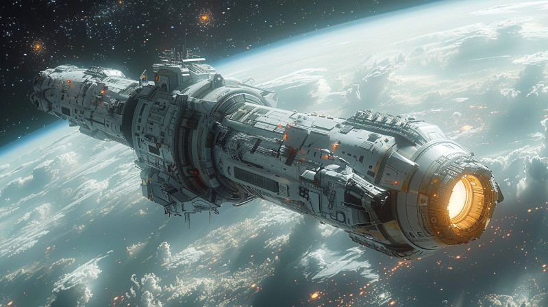

Figure 1: Setsafar Cruiser ship in close orbit of a planet.
Setsafar Commonwealth is a vast interstellar civilization, that has engaged in interstellar travel and commerce for well over 2000 years, based on the Commonwealth Timescale Standard.